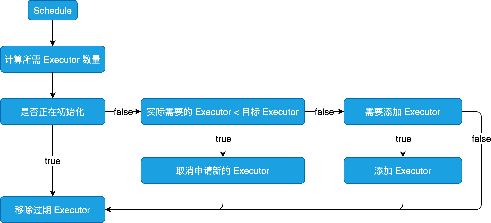

Spark 动态分配 Executor
本文最后更新于：2021年4月1日 下午
概述
Spark 提供了一种机制，可以根据工作负载动态调整用户的应用程序占用资源。这意味着，如果资源不再使用，应用程序可能会将它们返还给集群，并在之后需要的时候再发起请求。这个特性对于多个应用程序共享同一个 Spark 集群的时候特别有用。
Spark 默认是关闭该特性的，但是该特性在所有的集群模式下均可开启，包括 Standalone、YARN、Mesos、K8s 等，详情参考官网描述。
源码对应 Spark 2.4.5 版本。
源码分析
启动 ExecutorAllocationManager 需要配置 “spark.dynamicAllocation.enabled” 为 true，且不能为 local 模式，也可配置”spark.dynamicAllocation.testing” 为 true 进行指定测试时启用，相关源码位于 SparkContext 中。
启动与运行
// Optionally scale number of executors dynamically based on workload. Exposed for testing.
val dynamicAllocationEnabled = Utils.isDynamicAllocationEnabled(_conf)
// 基于工作负载动态分配和删除 Executor 的代理
_executorAllocationManager =
if (dynamicAllocationEnabled) {
schedulerBackend match {
case b: ExecutorAllocationClient =>
Some(new ExecutorAllocationManager(
schedulerBackend.asInstanceOf[ExecutorAllocationClient], listenerBus, _conf,
_env.blockManager.master))
case _ =>
None
}
} else {
None
}
_executorAllocationManager.foreach(_.start())在 ExecutorAllocationManager 启动方法中设置了对应的定时调度任务，并通过一个单一线程的线程池进行固定时间调度。
def start(): Unit = {
// 向事件总线添加 ExecutorAllocationListener
listenerBus.addToManagementQueue(listener)
// 定时调度任务
val scheduleTask = new Runnable() {
override def run(): Unit = {
try {
schedule()
} catch {
case ct: ControlThrowable =>
throw ct
case t: Throwable =>
logWarning(s"Uncaught exception in thread ${Thread.currentThread().getName}", t)
}
}
}
// 由只有一个线程且名为 spark-dynamic-executor-allocation 的 ScheduledThreadPoolExecutor 以默认值 100 ms 进行固定时间调度
executor.scheduleWithFixedDelay(scheduleTask, 0, intervalMillis, TimeUnit.MILLISECONDS)
// 请求所有的 Executor，numExecutorsTarget 为 spark.dynamicAllocation.minExecutors、spark.dynamicAllocation.initialExecutors、spark.executor.instances 的最大值，
// localityAwareTasks 为本地性偏好的 Task 数量，hostToLocalTaskCount 是 Host 与想要在此节点上运行的 Task 数量之间的映射关系
client.requestTotalExecutors(numExecutorsTarget, localityAwareTasks, hostToLocalTaskCount)更新并同步目标 Executor 的数量，这里会比较实际需要的 Executor 最大数量和配置的 Executor 最大数量之间的关系，并根据情况决定合适的值。
private def updateAndSyncNumExecutorsTarget(now: Long): Int = synchronized {
// 获得实际需要的 Executor 的最大数量
val maxNeeded = maxNumExecutorsNeeded
if (initializing) {
// Do not change our target while we are still initializing,
// Otherwise the first job may have to ramp up unnecessarily
0
} else if (maxNeeded < numExecutorsTarget) {
// numExecutorsTarget 超过了实际需要的 Executor 最大数量，则减少需要的 Executor 数量
// The target number exceeds the number we actually need, so stop adding new
// executors and inform the cluster manager to cancel the extra pending requests
val oldNumExecutorsTarget = numExecutorsTarget
numExecutorsTarget = math.max(maxNeeded, minNumExecutors)
numExecutorsToAdd = 1
// If the new target has not changed, avoid sending a message to the cluster manager
if (numExecutorsTarget < oldNumExecutorsTarget) {
// We lower the target number of executors but don't actively kill any yet. Killing is
// controlled separately by an idle timeout. It's still helpful to reduce the target number
// in case an executor just happens to get lost (eg., bad hardware, or the cluster manager
// preempts it) -- in that case, there is no point in trying to immediately get a new
// executor, since we wouldn't even use it yet.
// 重新请求 numExecutorsTarget 指定的目标 Executor 数量，以此停止添加新的执行程序，并通知集群管理器取消额外的待处理
// Executor 请求，最后返回减少的 Executor 数量
client.requestTotalExecutors(numExecutorsTarget, localityAwareTasks, hostToLocalTaskCount)
logDebug(s"Lowering target number of executors to $numExecutorsTarget (previously " +
s"$oldNumExecutorsTarget) because not all requested executors are actually needed")
}
numExecutorsTarget - oldNumExecutorsTarget
} else if (addTime != NOT_SET && now >= addTime) {
// 如果实际需要的 Executor 最大数量小于 numExecutorsTarget，且当前时间大于上次添加 Executor 的时间，则先通知集群管理器添加新的 Executor，
// 再更新添加 Executor 的时间，最后返回添加的 Executor 数量
val delta = addExecutors(maxNeeded)
logDebug(s"Starting timer to add more executors (to " +
s"expire in $sustainedSchedulerBacklogTimeoutS seconds)")
addTime = now + (sustainedSchedulerBacklogTimeoutS * 1000)
delta
} else {
0
}
}思路图

相关参数
spark.dynamicAllocation.enabled- 是否启用 ExecutorAllocationManagerspark.dynamicAllocation.minExecutors- Executor 最小数量spark.dynamicAllocation.maxExecutors- Executor 最大数量spark.dynamicAllocation.initialExecutors- 初始化的 Executor 数量spark.dynamicAllocation.executorAllocationRatio- 用于减少动态分配的并行性，在任务较小时会浪费资源，值在 0.0 到 1.0 之间spark.dynamicAllocation.schedulerBacklogTimeout- 如果在此时间内存在积压的任务，创建新的 Executor，默认 1sspark.dynamicAllocation.sustainedSchedulerBacklogTimeout- 如果在此时间内持续性积压任务，创建新的 Executor，在超过schedulerBacklogTimeout后的启动间隔，时间与其保持一致spark.dynamicAllocation.executorIdleTimeout- 如果 Executor 在此时间内保持闲置，除非它缓存了一些块数据，则将其移除，默认 60s
在启用 ExecutorAllocationManager 的情况下，最好也配置
spark.shuffle.service.enabled为 true，否则可能会在移除 Executor 的过程中，丢失 Shuffle 数据。
本博客所有文章除特别声明外，均采用 CC BY-SA 4.0 协议 ，转载请注明出处！